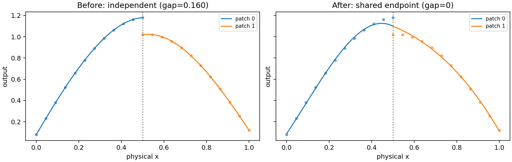

Single and assembled domains
Choose the domain before the degree
A Bézier simplex models a response over one simplex: a segment for two barycentric weights, a triangle for three, or a higher-dimensional trade-off domain. A simploid is a product of simplices. Use a product when independent sets of weights vary together, such as a triangular trade-off at each setting of a separate interval parameter. Use an assembled domain when several local patches must share boundaries, or when a single simplex cannot express the required topology.
These choices solve different problems. Increasing degree adds polynomial flexibility inside an existing chart. Adding a product factor introduces an independent parameter block. Gluing cells changes how charts meet. A higher degree cannot turn a segment into a loop by itself; the endpoint identification must be represented in the domain or enforced separately by the application. Likewise, choosing a square rather than a triangle changes the feasible combinations of parameters, not simply the number of learned controls.
The unified API separates four objects. SimploidalSet is a mutable topology
builder. BezierSpace is an immutable compiled geometry and coefficient
layout. Samples contains observations with parameter rows and cell IDs.
BezierModel contains learned output coefficients in that space. fit
uses those objects and always returns FitResult. No separate regression
entry point is needed for products or assembled domains.
Read the square, prism and glued-patch picture
The three-panel overview gives a concrete picture of the domains used below. In its left panel, choosing one location on each of two intervals gives a square; the Bézier map bends that square into a saddle. In the middle, each triangle location can be combined with any height, giving a prism. Only its two-dimensional boundary faces are rendered. In the right panel, the triangle and square have separate charts and meet through an identified edge. Gluing does not introduce an independent parameter, whereas taking a product does.
Keep three quantities separate when reading the figure. The type gives
factor dimensions, the degree gives polynomial capacity per factor, and
the output count gives the ambient dimension in which the image lies.
A type (1, 1) model with three outputs is a surface in three-dimensional
space; a type (2, 1) model has a three-dimensional parameter domain even
when the renderer shows only surfaces. Red controls describe the polynomial
and are not necessarily measured points or points on the image.
Domain |
Type and dimension |
Active row |
Example interpretation |
|---|---|---|---|
Triangle |
|
|
Three competing priorities |
Square |
|
|
Two priorities and a condition |
Prism |
|
|
Three priorities and a condition |
Triangle glued to square |
Two maximal cells, each dimension 2 |
Cell ID plus its local row |
Neighboring response regions |
The square allows u and v both to reach one. Replacing its four
columns by one sum-to-one row would change the domain, not merely its
encoding. Conversely, using a prism for three coupled priority weights and
a height preserves both the triangular priority constraint and independent
height variation.
Single simplices and products
import torch
from torch_bsf import BezierSpace, Points, Samples, fit
from torch_bsf.sampling import sample, grid
triangle = BezierSpace.simplex(2, degree=3)
prism = BezierSpace.simploid((2, 1), degree=(3, 2))
points = sample(prism, 40, seed=7)
t = points.parameters
assert t.shape == (40, 5)
assert torch.allclose(t[:, :3].sum(1), torch.ones(40, dtype=torch.float64))
assert torch.allclose(t[:, 3:].sum(1), torch.ones(40, dtype=torch.float64))
values = (t[:, 1] + t[:, 2] * t[:, 4].square())[:, None]
result = fit(prism, Samples(points, values)).require_success()
assert prism.n_controls == 10 * 3
assert result.metrics["data_mse"] < 1e-24
The prism’s first block contains three triangle coordinates and its second
contains two segment coordinates. Each block sums to one. The five-column row
therefore sums to two, which is correct for a two-factor product. Normalizing
the whole row to one would break both factors. Factor order is meaningful:
(2, 1) and (1, 2) have the same total dimension but different column
block order and degree interpretation.
A product’s dimension is the sum of factor dimensions. Its coordinate width is the sum of each dimension plus one. Its control count is the product of factor control counts. For dimensions \((a_1,\ldots,a_k)\) and degrees \((d_1,\ldots,d_k)\),
A degree-three triangle has ten controls; adding a degree-two interval gives thirty. Increasing the interval degree to four gives fifty, while leaving the triangle degree unchanged. This anisotropic capacity is useful when the response varies more strongly along one independent factor. It also increases the amount of data required to determine the coefficients reliably.
For an integer degree supplied to simploid, every factor uses that
degree. For a tuple, supply one entry per factor. A zero-dimensional simplex
is a constant domain with no active parameter columns. It is distinct from
a degree-zero function on a nonconstant domain: the latter still has input
coordinates, although its predicted value does not vary with them.
Evaluate through result.model(points). The basis is a tensor product of
factor Bernstein polynomials. Outputs can have any positive column count;
geometry does not depend on that count. A fitted model is a PyTorch module,
so evaluation is differentiable with respect to coefficients and parameter
coordinates. Numerical regression itself remains a CPU float64 solve.
Build a connected two-patch domain
Suppose a response is measured on two local intervals representing adjacent experimental regimes. Fitting them independently can give different predictions at the common endpoint, especially with measurement noise. Gluing their endpoint vertices makes the corresponding coefficients shared, so the models agree there exactly while retaining independent interior controls.
from torch_bsf.geometry import SimploidalSet
domain = SimploidalSet()
left = domain.add_simplex(1)
right = domain.add_simplex(1)
domain.identify(left.face(0, 0), right.face(0, 1))
space = BezierSpace.on_set(domain, degree=3)
u = torch.linspace(0, 1, 12, dtype=torch.float64)
local = torch.stack([1 - u, u], dim=1)
left_values = (.5 * u).square()[:, None]
right_values = (.5 + .5 * u).square()[:, None]
observations = Samples.from_cells(space, [
(left, local, left_values),
(right, local, right_values),
])
joined = fit(space, observations).require_success()
seam = Points.from_cells(space, [
(left, [[0., 1.]]),
(right, [[1., 0.]]),
])
seam_values = joined.model(seam)
assert torch.equal(seam_values[0], seam_values[1])
assert space.control_index((0, 3), cell=left) == space.control_index((3, 0), cell=right)
face(i, j) removes vertex j in factor i. On a segment,
face(0, 0) leaves its second endpoint and face(0, 1) leaves its first.
This indexing can initially feel reversed if you think of a face number as a
vertex number. Verify endpoint coordinate rows explicitly before identifying
patches. For a triangle, a face is an edge; for a product, the selected factor
is reduced while all other factors remain.
The fit above uses two local charts for one global scalar response. Local
coordinate u=0 on the right patch is physically different from u=0
on the left. The cell ID carries that distinction. Never concatenate local
parameter arrays and discard their IDs: equal coordinates do not mean equal
physical locations across charts.


Fig. 18 Before: independent cubic patches fit offset observations and disagree at the common physical endpoint. After: one compiled space shares that endpoint coefficient. Interior residuals may increase because continuity is an exact modeling requirement. The same observations are used throughout.
Reproduce the figure with python examples/generate_guide_figures.py.
The generator checks exact equality at the assembled seam and stores the
before/after endpoint gap in metrics.json.
This illustrates C0 continuity, not equal derivatives or a globally smooth
parameterization.
Mix cell types and preserve row identity
A simploidal set can contain triangles, squares, prisms and their identified faces. For example, connect a triangle edge to a square edge:
from torch_bsf import BezierSpace, Points, Samples, fit
from torch_bsf.geometry import SimploidalSet
from torch_bsf.sampling import sample
domain = SimploidalSet()
triangle = domain.add_simplex(2)
square = domain.add_simploid((1, 1))
domain.identify(triangle.face(0, 0), square.face(0, 0))
space = BezierSpace.on_set(domain, degree=2)
triangle_points = sample(BezierSpace.simplex(2, degree=2), 30, seed=1)
square_points = sample(BezierSpace.simploid((1, 1), degree=2), 30, seed=2)
observations = Samples.from_cells(space, [
(triangle, triangle_points.parameters, triangle_points.parameters[:, :1]),
(square, square_points.parameters, square_points.parameters[:, :1]),
])
mixed_result = fit(space, observations).require_success()
prediction_points = Points.from_cells(space, [
(square, square_points.parameters[:2]),
(triangle, triangle_points.parameters[:3]),
])
assert mixed_result.model(prediction_points).shape == (5, 1)
from_cells packs rows and pads smaller charts to space.width. Only a
row’s active cell coordinates are evaluated. The returned prediction order
matches the supplied batch order, so the first two predictions above belong
to the square and the next three to the triangle. For observations, retain
that same order for values and weights.
Points(parameters, cell_ids) offers direct construction when you already
have padded arrays. Use integer cell IDs with one ID per row. The immutable
space validates that coordinates belong to each cell’s simplex factors.
Multi-cell models require explicit Points even if every cell has the same
width; untagged tensors cannot choose between two charts safely.
space.n_cells includes addressable lower-dimensional faces as well as
maximal patches. space.main_cells identifies maximal cells used by default
sampling and plotting. Do not assume those IDs are consecutive top-level
patch numbers or equal to builder insertion order. Resolve builder handles
with space.cell_id(handle) and preserve the resolved IDs in exported
observation files.
Continuity and exact constraints
Shared coefficients enforce C0 continuity: cell predictions agree on the identified face. They do not automatically enforce tangent agreement, C1 continuity, injectivity, manifold orientation or lack of self-intersections. A visually smooth projection is insufficient evidence for any of those properties. Evaluate the particular derivative or geometric condition your application requires.
If an entire boundary response is known, fixing its complete control net
prescribes that polynomial exactly. Fixing only boundary vertices prescribes
only vertex values at higher degree. FixedControls.from_cells resolves
local references into shared global rows and rejects conflicting values.
When observations on opposite sides of a seam disagree, the fitted shared
boundary compromises according to their relative weights unless it is fixed.
Smoothness penalizes adjacent coefficient differences in the global net. It can reduce variation, but it is not a derivative-matching condition between charts. Its effect depends on degree and adjacency as well as its weight. Keep geometry, exact constraints and soft regularization conceptually separate when interpreting a before/after comparison. See Regularization and numerical evidence and Fixed controls for their objectives and tuning guidance.
Sampling and visual checks
sample(space, n, seed=...) chooses maximal cells with equal probability
by default, then samples uniformly in their factor charts. This is not
uniform physical area on a curved fitted surface. Supply cell weights when
your experiment budget should favor some patches. If every patch needs
observations, allocate them explicitly instead of relying on expected counts.
grid visits every selected maximal chart and includes its boundary lattice.
Shared physical boundary points can appear as several chart-tagged rows.
Keep both when checking C0 agreement, but account for duplication when
calculating a physical integration rule or pooled region metric. A low-dimensional
face with few observations can still be underdetermined even if the whole
assembled data set is large.
plot_model draws all maximal cell images on common axes. It displays
higher-dimensional domains through two-dimensional faces. For mixed patches,
overlay observations with distinct markers and inspect residuals per cell.
A global average error can hide failure on a small but important patch.
Projecting to two outputs can also hide disagreement in another output.
For an exact local subdivision, retain subdivide parameter maps and compare
children in parent coordinates. That operation does not automatically remesh
adjacent assembled patches. Rebuild the domain explicitly if the refined
pieces must share new boundaries with their neighbors. See Exact local subdivision
for the distinction between exact reparameterization and additional local fitting.
Persistence and troubleshooting
save_model preserves compiled cells, stable IDs, shared layout and learned
coefficients. A restored model does not need the mutable builder or its original
Python handles. For new observations after loading, use saved integer IDs and
the recorded chart conventions. A CSV of control coordinates alone cannot
reconstruct topology or shared coefficient relationships.
If a prediction rejects a row, first check its cell ID, active width and per-factor sums. If two supposed boundary points disagree, check that they are actually paired by the declared identification and that their local coordinates have matching orientation. If fitting succeeds but coefficients are unidentifiable, inspect per-cell observation coverage and data diagnostics; regularizing the assembled system does not add missing measurements.
When choosing between one high-degree chart and several glued low-degree charts, compare held-out error, total controls, boundary requirements and maintenance of coordinate maps. Several patches can capture local structure, but they require explicit chart identity and topology. Prefer the simplest domain that matches the experiment’s feasible parameter combinations and required global connectivity, then tune its degree with validation.
Homology
The topology of a simploidal set can be checked after it is built by computing its homology (Section 4.4 of Peltier and Lienhardt [PL18]). The chain group \(C_k\) is spanned by the non-degenerate simploids of dimension \(k\), and the boundary of a simploid \(\sigma\) of type \((a_1, \ldots, a_n)\) follows the sign rule of a product of simplices:
where the terms whose face \(d^i_j \sigma\) is degenerate are dropped.
boundary_matrix()returns the integer matrix of \(\partial_k\), with rowssimploids(k - 1)and columnssimploids(k); it satisfiesboundary_matrix(k) @ boundary_matrix(k + 1) == 0.betti_numbers()returns the Betti numbers \(\beta_0, \ldots, \beta_{\dim}\), the ranks of the homology groups. The ranks are computed exactly by integer elimination, over the rationals (field="Q", default) or over \(\mathbb Z / 2\) (field="Z2"); the two differ only for spaces whose integral homology has torsion, such as non-orientable surfaces.
from torch_bsf.geometry import SimploidalSet
# A torus: a square whose opposite edges are identified
torus = SimploidalSet()
square = torus.add_simploid((1, 1))
torus.identify(square.face(0, 0), square.face(0, 1))
torus.identify(square.face(1, 0), square.face(1, 1))
print(torus.betti_numbers())
# A sphere: a square whose two edges face(1, *) are collapsed into
# vertices and whose two other edges are identified
sphere = SimploidalSet()
square = sphere.add_simploid((1, 1))
for j in range(2):
edge = square.face(1, j)
sphere.degenerate(edge, edge.face(0, 0), 0, -1)
sphere.identify(square.face(0, 0), square.face(0, 1))
print(sphere.betti_numbers())
# A projective plane: two triangles glued along their edges
rp2 = SimploidalSet()
t1, t2 = rp2.add_simplex(2), rp2.add_simplex(2)
rp2.identify(t1.face(0, 0), t2.face(0, 0))
rp2.identify(t1.face(0, 1), t2.face(0, 2))
rp2.identify(t1.face(0, 2), t2.face(0, 1))
print(rp2.betti_numbers(), rp2.betti_numbers(field="Z2"))
[1, 2, 1]
[1, 0, 1]
[1, 0, 0] [1, 1, 1]
Topological checks complement numerical checks
Betti numbers describe connectivity and holes of the declared domain, not properties inferred from observations. A torus domain remains topologically a torus even if learned coefficients collapse its image to a point. Conversely, a self-intersecting plotted image does not automatically change the builder’s homology. Inspect the domain and its fitted image separately.
Use domain.check() before compilation, examine expected component and hole
counts, and then verify representative identified-face predictions numerically.
If a collapsed edge is represented through degeneracy, confirm that the fitted
image is constant along that direction. These small checks often reveal chart
mistakes earlier than a large regression or expensive experiment batch.
For the categorical background and face/degeneracy relations, see
The Category of Simploidal Sets.
Plan an assembled experiment from end to end
Begin with a small geometric sketch that names every local chart and its parameter convention. List which faces represent the same physical boundary and whether their parameter direction agrees. Then construct only those identifications and verify them using simple coefficient values or a known response. This is easier to diagnose than fitting a large noisy data set and trying to infer a mistaken orientation from the resulting image.
Allocate observations per maximal patch and deliberately include important
shared boundaries. Boundary measurements can be entered through their face
cell or through either incident chart, provided the chosen coordinates and
IDs are consistent. If the same physical measurement is entered twice, it
receives twice the relative influence unless weights account for duplication.
Decide whether two rows are independent experiments or two chart descriptions
of one experiment before forming the final Samples object.
Check control counts after compilation rather than summing standalone patch counts: sharing reduces the number of independent unknowns. Conversely, a large total observation count does not imply that every patch is sufficiently sampled. Build a per-cell summary of row count, total weight and held-out residuals. This often identifies a poorly covered patch before global data rank or a global error statistic makes the underlying cause obvious.
When comparing topology choices, keep the measured responses and physical evaluation locations fixed. An independently fitted pair of patches has more free boundary values than a glued pair, so its training residual may be lower. That does not make it preferable when continuity is a requirement. Report both held-out accuracy and the boundary agreement condition, as the seam figure does. For higher-dimensional faces, compare a grid over the whole face, not just its corners.
After the geometry and validation protocol are stable, increase degree or add penalties one change at a time. Recompile when topology changes, resolve fixed rows again, and preserve the mapping from raw-data chart names to stable saved IDs. That mapping makes model archives useful to future experiments without depending on the lifetime of the original topology builder.
Retain that validated domain schema alongside every exported observation batch.